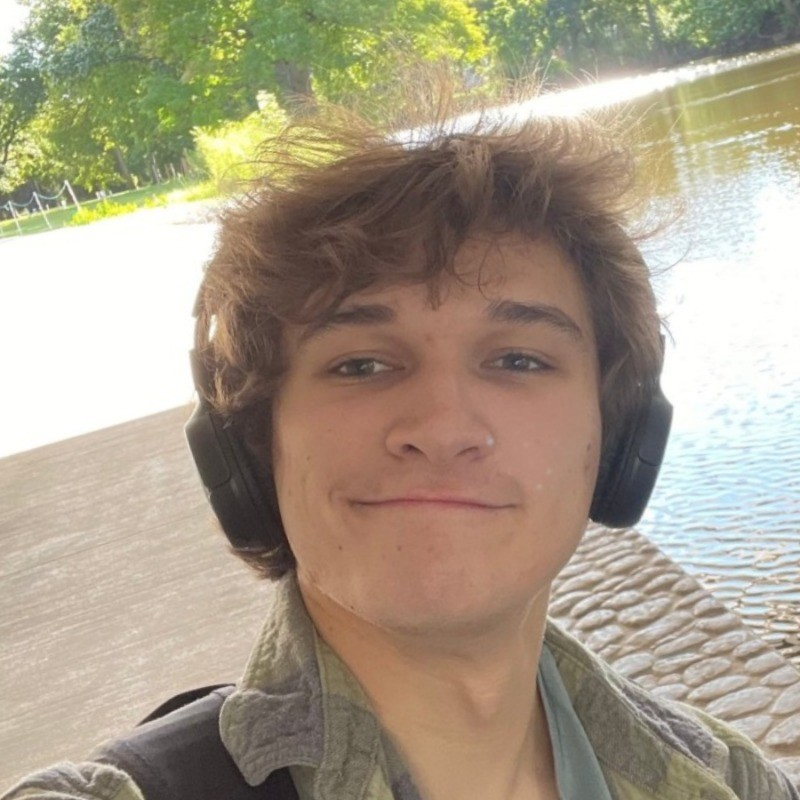

Richard Glosser III
I'm a junior Computer Science student at Michigan State University with a focus on web and app development. Currently based in East Lansing and Rochester Hills, MI


My Passion for Innovation
Beyond programming, I channel my creativity into game design, blending technical skills and artistic expression to bring interactive ideas to life. I also have a strong interest in horticulture and proudly care for a variety of carnivorous plants.
Career Goals
My ultimate career goal is to work in integrated systems development, particularly in virtual reality. I plan on taking a masters in Electrical Engineering 5 years in the future to break into this inudstry.